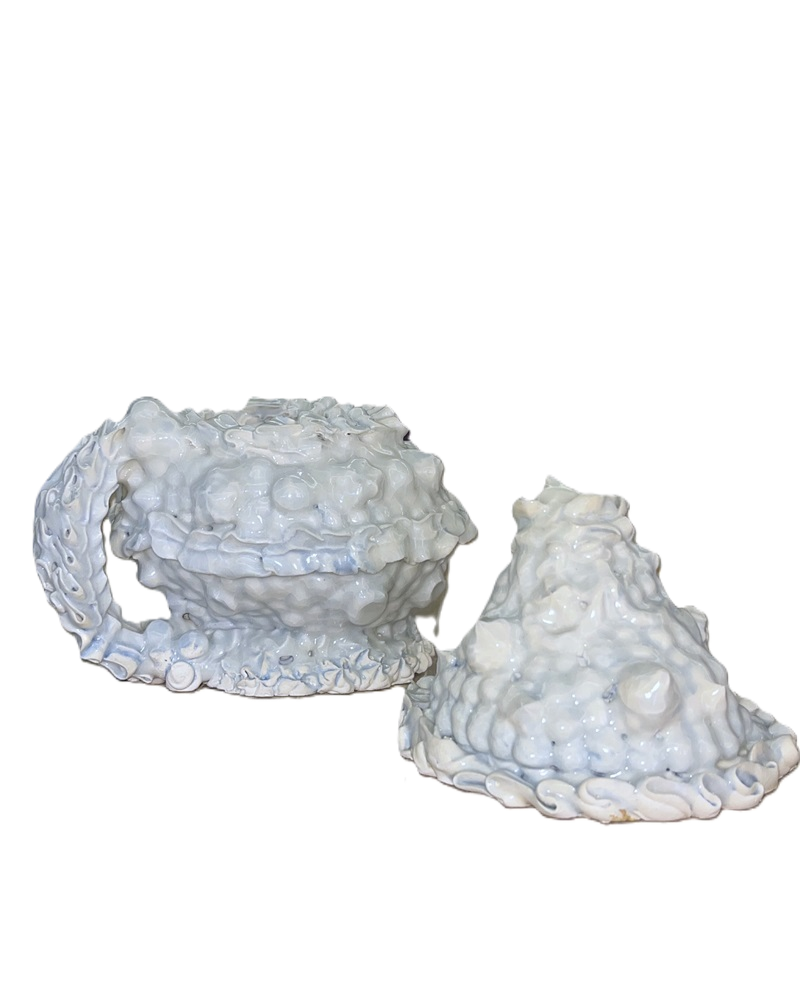
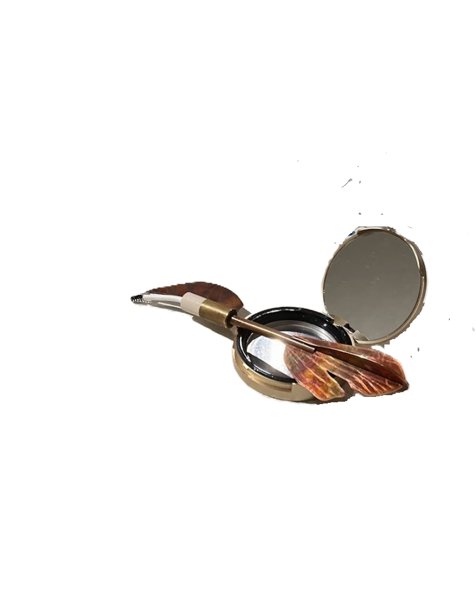
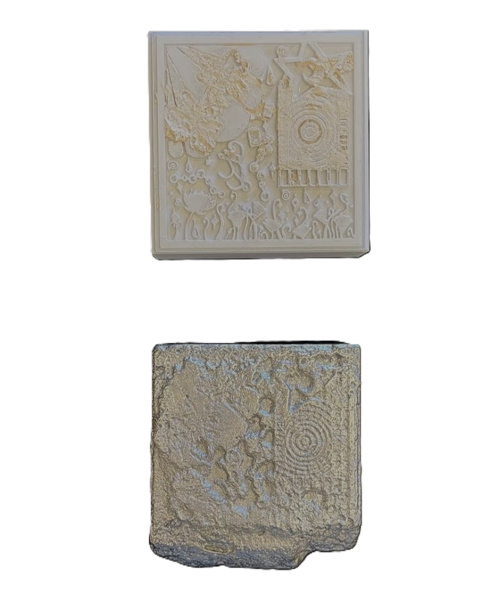
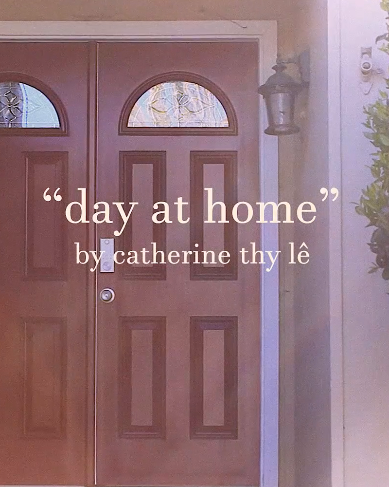
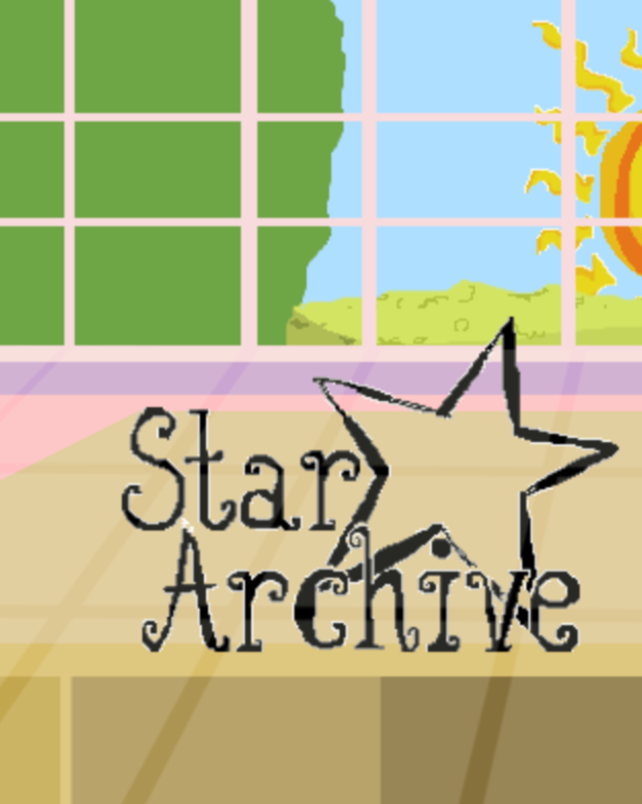
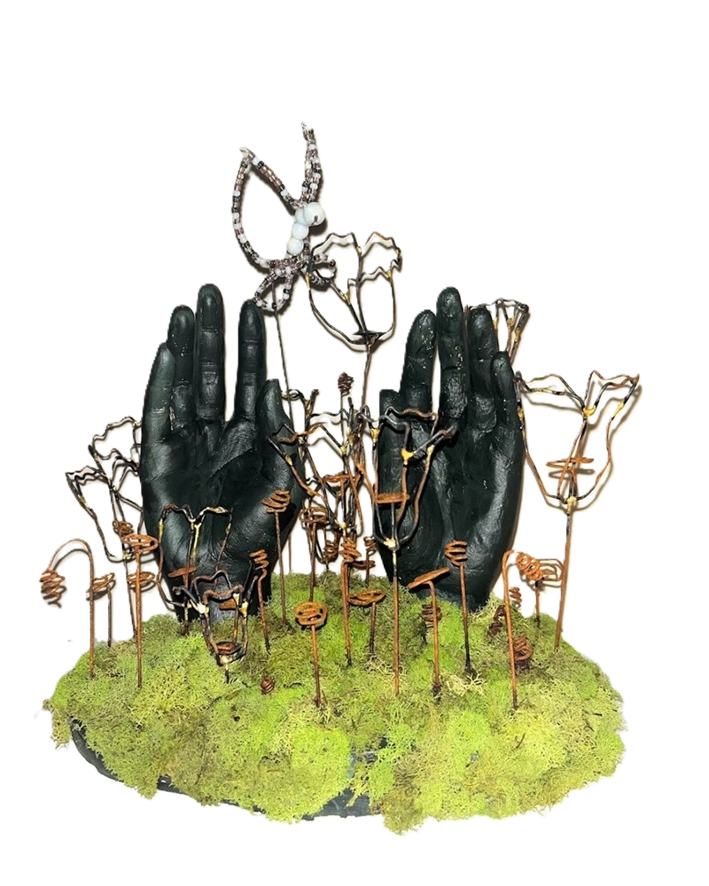
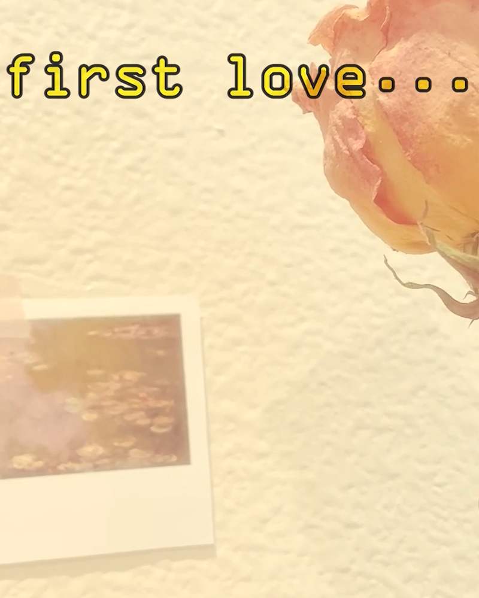
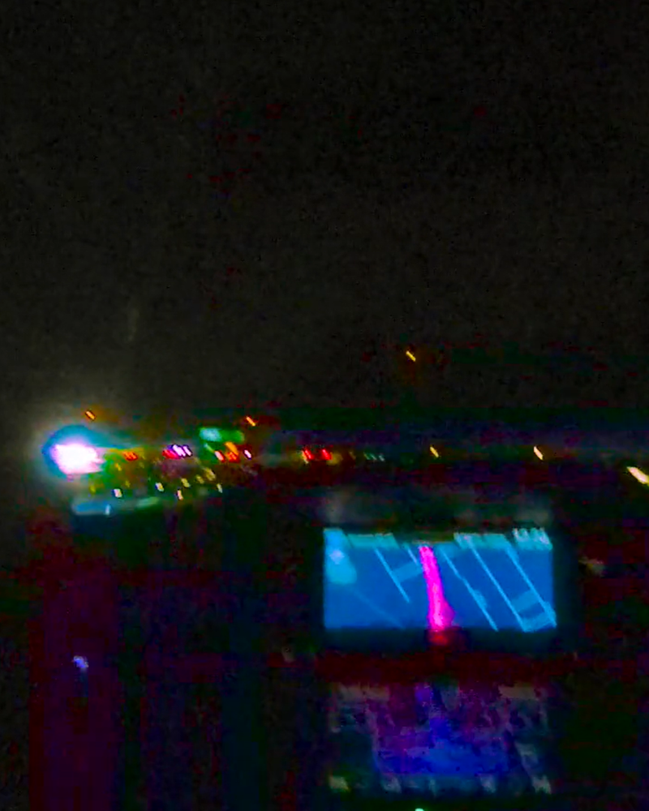

CA, USA | Interdisciplinary Artist
-Projects-

"Pillow Vase"
"Pillow Vase"
2023, Glazed mid fire porcelain..

"Murder Hornet"
"Murder Hornet"
2023, Found objects (compact mirror and makeup applicator), patinated copper and brass.

"Untitled"
"Untitled"
2023, 3d printed PLA filament and cast alluminum.

"day at home"
"day at home"
2023, HD Full COlor Video, 3 minutes.
"day at home" Artist Statement
Life in the city is all fun and games until it’s just you, at home, by yourself. I’m still getting used to being comfortable on my own and in being alone on the days all my friends and family are busy or when it feels like I have too much to do. With “day at home”, I want to romantacize and take comfort in the days I am home alone doing mundane things like filling my Britta, doing homework, and lazing around listening to music. I want to make a cozy video that includes sinnipets of my routine when I’m at home doing my own thing, with emphasis on warmth, time, and a bit of a sense of yearning for the relationships I have in my life.
Continue to view full video. ->
Life in the city is all fun and games until it’s just you, at home, by yourself. I’m still getting used to being comfortable on my own and in being alone on the days all my friends and family are busy or when it feels like I have too much to do. With “day at home”, I want to romantacize and take comfort in the days I am home alone doing mundane things like filling my Britta, doing homework, and lazing around listening to music. I want to make a cozy video that includes sinnipets of my routine when I’m at home doing my own thing, with emphasis on warmth, time, and a bit of a sense of yearning for the relationships I have in my life.
Continue to view full video. ->

"Friends_:”) (a strawberry frog and banana snake)"
2022, 3D render.

"Star Archive"
"Star Archive"
2022, Point and Click Game (Play here. ->).

"Surrender"
"Surrender"
2022, Mixed media (acrylic, beads, moss, and wire on plaster).
"Surrender" Artist Statement
Within the past few years, I’ve experienced a lot of ups and downs. At times, it felt like I was stuck at my lowest points and that I wouldn’t be able to come back from it. I suppressed my emotions and bottled things in until I broke. The lows, sadness, and frustration are an inescapable part of life. There will always be a time when the universe throws you a curveball or it feels as if your whole life, being, and existence are crumbling around you. These brutal and heart wrenching moments are not easy, and never will be, but they are something you have to accept and deal with. Sometimes you need to take a moment to surrender to what life gives or takes from you. When you allow your emotions and experiences to consume you, acceptance and calm follows. With “Surrender”, I want to express hope and growth that can stem from hardships and dark places.
The two hands emerging from the moss covered floor are held up in a surrendering motion, reaching upwards for what is to come in the future. Poppies surround and grow from the ground around the hands. They are the state flower of California, which is where I was born and raised, and are a symbol of hope and resilience. The czech seed bead butterfly is the centerpiece and another symbol of transformation, infinite potential, and the ability to experience the wonder of life. The dark color palette of the piece is juxtaposed by the idea of hope and resilience, that even in the dark, there is room for brilliance and growth.
Within the past few years, I’ve experienced a lot of ups and downs. At times, it felt like I was stuck at my lowest points and that I wouldn’t be able to come back from it. I suppressed my emotions and bottled things in until I broke. The lows, sadness, and frustration are an inescapable part of life. There will always be a time when the universe throws you a curveball or it feels as if your whole life, being, and existence are crumbling around you. These brutal and heart wrenching moments are not easy, and never will be, but they are something you have to accept and deal with. Sometimes you need to take a moment to surrender to what life gives or takes from you. When you allow your emotions and experiences to consume you, acceptance and calm follows. With “Surrender”, I want to express hope and growth that can stem from hardships and dark places.
The two hands emerging from the moss covered floor are held up in a surrendering motion, reaching upwards for what is to come in the future. Poppies surround and grow from the ground around the hands. They are the state flower of California, which is where I was born and raised, and are a symbol of hope and resilience. The czech seed bead butterfly is the centerpiece and another symbol of transformation, infinite potential, and the ability to experience the wonder of life. The dark color palette of the piece is juxtaposed by the idea of hope and resilience, that even in the dark, there is room for brilliance and growth.

"To my first love..."
"To my first love..."
2021, Full HD Color Video, 2 minute, 53 seconds.
"To my first love..." Artist Statment
“To my first love...” is a reminiscent video on what it feels like as a young person to experience your first romantic love. With a dreamy and warm aesthetic, I want to take the viewer through the memories of the main character, who is thinking back to the first romantic love they experienced as a teenager. The video plays through narrative clips that show us the love experienced by the main character as well as abstract shots that follow along to the narration. When thinking of “first love”, I imagine a relationship that happened long ago that was pure, innocent, fun, and experimental. I want the viewers to see how the main character was able to clumsily learn and experience a lot through their first love but it ultimately was not a connection that was meant to last- and looking back to it now, they are no longer bitter but accepting of that fact. With this video art, I want to show how beautiful love, more specifically our first romantic love as young people, is and how we should live happily in those moments while experiencing them. How our cluelessness and foolishness when being blinded by love is something that we should be grateful for and think fondly of because it is part of the path that brings us to where we are currently. Music by Joe Hisaishi "TWO OF US". I did not create nor do I own the rights to the music used. I also am not endorsed or connected to the artist in any way, shape, or form. Used for fair use and non-commercially.
Continue to view full video. ->
“To my first love...” is a reminiscent video on what it feels like as a young person to experience your first romantic love. With a dreamy and warm aesthetic, I want to take the viewer through the memories of the main character, who is thinking back to the first romantic love they experienced as a teenager. The video plays through narrative clips that show us the love experienced by the main character as well as abstract shots that follow along to the narration. When thinking of “first love”, I imagine a relationship that happened long ago that was pure, innocent, fun, and experimental. I want the viewers to see how the main character was able to clumsily learn and experience a lot through their first love but it ultimately was not a connection that was meant to last- and looking back to it now, they are no longer bitter but accepting of that fact. With this video art, I want to show how beautiful love, more specifically our first romantic love as young people, is and how we should live happily in those moments while experiencing them. How our cluelessness and foolishness when being blinded by love is something that we should be grateful for and think fondly of because it is part of the path that brings us to where we are currently. Music by Joe Hisaishi "TWO OF US". I did not create nor do I own the rights to the music used. I also am not endorsed or connected to the artist in any way, shape, or form. Used for fair use and non-commercially.
Continue to view full video. ->

"overlooked vibrance"